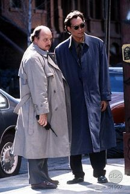

|
All similarities to actual people, places, events, institutions and organisations in the following material are entirely coincidental. Yes they are.
'Hello?'
'Good morning. I'm Detective Constable Witherspoon, and this is Detective Constable Black. May we come in?'
'Er, I suppose you had better, hadn't you?'
|

|